<!DOCTYPE html>
<html lang="fr">
<head>
  <meta charset="UTF-8">
  <meta name="viewport" content="width=device-width, initial-scale=1.0">
  <meta http-equiv="X-UA-Compatible" content="ie=edge">
  <title>Image responsives</title>
</head>
<body>
  <header>
    <h1>html css expert Cours & Demo</h1>
    <!--racourcie nav>(ul>li*8>a) -->
    <nav>
      <h2>menu prinsipale</h2>
      <ul>
        <li><a href="../index.html">Accueille</a></li>
        <li><a href="imagesResponsive.html">Images responsive</a></li>
        <li><a href="cssGridLayout.html">CSS Grid Layout</a></li>
        <li><a href="metadonnees.html">Métadonnées</a></li>
        <li><a href="combinerFlexboxEtGrid.html">Combiner flexbox et grid layout</a></li>
        <li><a href="NomageCSS.html">Nomage CSS: SMACSS,BEM,Atomic CSS</a></li>
        <li><a href="LesFrameworks.html">Frameworks: Bootstrap,Foundation</a></li>
        <li><a href="Préporcesseur.html">Préporcesseur: less Et SASS(Compass)</a></li>
      </ul>
    </nav>
  </header>
  <main>
    <h1>Image responsives</h1>

    <article class="sommaire">
      <h2 class="titre-sommaire">Sommaire</h2>

      <nav>
        <ul>
          <li><a href="#Grand-I">I. L'image responsive</a>
            <ul>
              <li><a href="#Choix-par-la-resolution">A. Choix par la resolution </a></li>
              <li><a href="#Choix-par-la-lisibilité">B. Choix par la lisibilité de l'image(ou considerations esthétiques)</a></li>
            </ul>
          </li>
          <li><a href="#Grand-II"> II L'attribut srset </a>
            <ul>
              <li><a href="#La-largeur-des-images">A. La largeur des images</a></li>
              <li><a href="#La-denciter-des-images">B. La denciter des images</a></li>
              <li><a href="#L-attribut-sizes">C. L’attribut sizes</a></li>
            </ul>
          </li>
          <li><a href="#Grand-III">III La balise  &ltpicture&gt </a>
            <ul>
              <li><a href="#Fonctionnement">A. Fonctionnement</a></li>
              <li><a href="#Choix-des-types">B. Choix des types (ou formats) d’images</a></li>
            </ul>
          </li>
          <li><a href="#Grand-IV">IV. Conclusion</a></li>
        </ul>
      </nav>

      <p>
        si l'on en croit la définition de <strong class="nom-propre">Jason Grigsby</strong>,
        une image responsive se réfère à :« Une méthode pour fournir aux
        navigateurs des sources d’images qui diffèrent selon la résolution de l’appareil, la taille
        de l’élément image sur la page, ou tout autre facteur. »
      </p>

      <h2>Images responsive sur Youtube FR:</h2>
      <p>
        <a href="https://www.youtube.com/watch?v=N-aiPrb1rOM">Tutoriel HTML:
        Images responsives par: <strong class="nom-propre">Grafikart.fr</strong> </a>
      </p>

    </article>
    <article class="">
      <h2 id="Grand-I">I. L'images responsive</h2>

      <p>
        Une image responsive (ou adaptative) répond au besoin des différents
        appareils "ecrant" capables de consulter une page web. Il paraît peu adéquat
        qu’un téléphone consulte une image de 3200 px sur 4200 px.
        L’idée serait donc, de donner le choix entre différentes sources images,
        suivant le profil des appareils servant à les afficher
      </p>

      <p>
        Le problème est que si on n’utilise que la balise &ltimg&gt, il n’y a qu’un
        choix de source pour l’image. Pour rappel, la balise &ltimg&gt se présente
        sous sa plus simple expression, comme ceci :
      </p>

      <p>EX 1 balise Image: &lt img src= "image.jpg" alt= "image" &gt</p>

      <p>
        Cependant, même si on arrive à avoir plusieurs sources disponibles pour
        l’image, il faut également définir des critères pour opérer un choix entre
        celles-ci.
      </p>

      <h3 id="Choix-par-la-resolution">A. Choix par resolution</h3>

      <p>
        Comme pour la conception d’un site responsive, on a défini des
        points de rupture pour nos pages, on définit des tailles d’images
        différentes suivant la résolution cible :
      </p>
      <ul>
        <li>téléphone : petite taille ;</li>
        <li>tablette : taille moyenne ;</li>
        <li>écran : grande taille.</li>
      </ul>

      <p>
        Dans le même ordre d’idées, mais on y reviendra plus tard en détail, <strong> on
          peut modifier la résolution non plus cible, mais de l’image elle-même.
          Dans les deux cas pourtant,  on peut dire que l’on est dans le cas général,
          voulant que l’image la plus légère aille vers l’écran le plus petit
          (en présumant que la qualité de connexion est moindre pour le téléphone)</strong>.
        </p>

        <h3 id="Choix-par-la-lisibilité" >B. Choix par la lisibilité de limage (consideration esthetiques)</h3>

        <p>
          -Une grand images sur un grand ecrant ces Bien! <br>
          -Une grand images sur un petit ecrant ces Pas bien! <br>
          Dans le passage d’un grand écran à un petit, si on a au départ une grande
          image, celle-ci peut se retrouver à ne plus avoir grand intérêt, une fois
          consultée sur un petit écran.
        </p>

        <p>Ici, une image sur un écran :</p>

        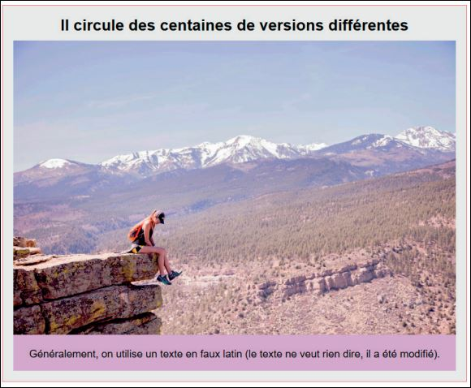

        <p>La même image sur un petit écran :</p>
        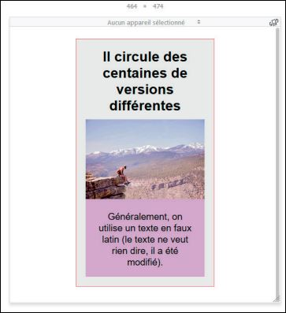
        <p>
          Le personnage qui constitue, avec le paysage, le principal intérêt de
          l’image est ridiculement petit. Comment faire ?
        </p>

        <p>1. Recadrer</p>

        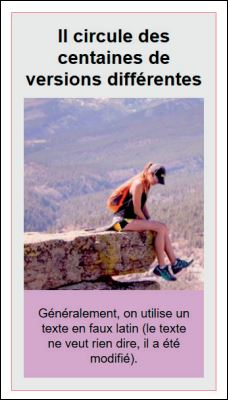

        <p>2. Changer de ratio</p>
        <p>On peut passer de paysage à portrait et inversement :</p>
        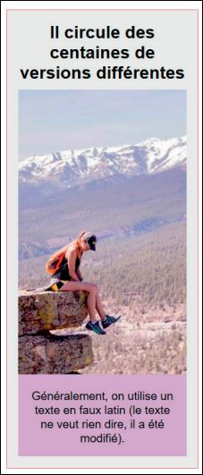
        <p>
          On voit que l’image a également été recadrée ; ce n’est donc pas très
          différent de ce que l’on avait précédemment.
        </p>
        <p>
          Ces remarques préliminaires sont importantes, mais ne sont rien s’il n’est
          pas possible d’affecter à différentes tailles d’écran, un choix d’images
          différent.
        </p>

      </article>

      <article class="">
        <h2 id="Grand-II" >II. L'attribut srcet </h2>

        <p>
          Nous avons labitude d'utiliser la forme la plus simple d’appeler
          une image, avec l’attribut src.
        </p>

        <p>Comme ceci EX:  &lt img src= "image.jpg" alt= "image" &gt</p>

        <p>
          Depuis 2015, l’attribut scrset fait partie des spécifications
          officielles du HTML5. Comment ça fonctionne ?
        </p>

        <p>
          L’attribut srcset permet de laisser au navigateur, le choix de télécharger
          telle ou telle image, d’où un gain de temps pour l’affichage des pages
          s’agissant des petits écrans. Il permet également de choisir la taille de
          l’image.
        </p>
        <p>-Inconvégant et limites:</p>
        <p>
          Par contre, ce n’est pas forcément ce que l’on souhaite. Lorsqu’on réalise
          un site adaptatif, on pilote en effet les largeurs des éléments en
          pourcentages dans le CSS, en évitant d’indiquer quoi que ce soit
          dans le HTML.On touche aux limites de cet attribut.
        </p>

        <p>Le code HTML :</p>
        <p>&lt img src="img/mount.JPG"<br> srcset="<br>
          img/mount-recader.JPG 499w,<br>
          img/mount-Grande.JPG 960w," <br>
          alt = "personnage" &gt
        </p>

        <p>
          Dans l’attribut srcset, on indique dans l’ordre: <br>
          - Le nom de l’image (img/mount-recadre.jpg) ;<br>
          - La largeur de celle-ci (499w, ici le w veut dire largeur ou width en
          anglais).<br>
          <strong>Atention! :</strong> La largeurs doit corespondre a la largeurs réele de limage.<br><br>
          On fait de même pour la seconde image.
        </p>

        <h3 id="La-largeur-des-images" >A. La lageur des images</h3>
        <p>
          La largeur réelle de l’image, en pixels, est décrite par le descripteur w.
        </p>
        <p>
          Exemple : Si on « sauvegarde pour le web » à 1024 x 768 pixels, dans
          srcset, on décrit la source en mettant 1024w.
        </p>
        <p>
          C’est cette taille, celle que télécharge le navigateur, que l’on peut modifier
          par le CSS (ce que l’on fait dans la majorité des cas lorsqu’on réalise
          des pages responsives). Ce n’est pas la taille d’affichage !
        </p>
        <p>
          Le navigateur va choisir l’image qui lui semble la plus appropriée à la
          taille de l’écran.
        </p>

        <p> Le rendu sur un petit écran :</p>
        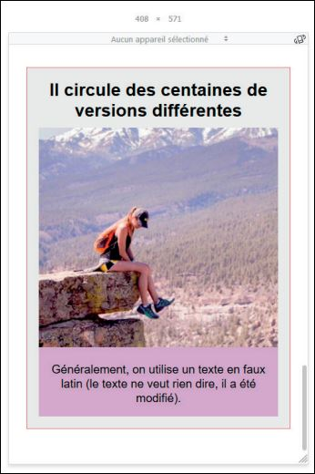
        <p>
          Le navigateur choisit l’image mount-recadre.jpg qui fait 499 px de large,
          car cela lui semble plus intéressant en termes de chargement pour une
          taille d’écran de 408 px
        </p>

        <p> Le rendu sur un écran plus large :</p>

        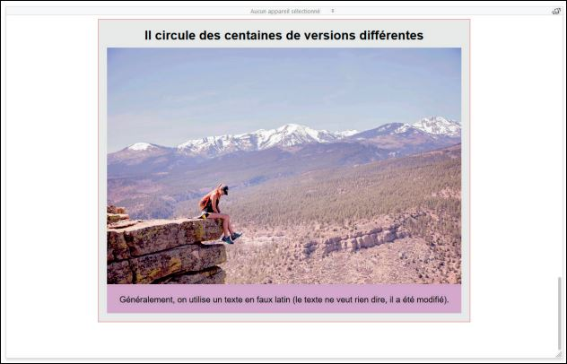

        <p>
          Le navigateur choisit l’image mount-grande.jpg qui fait 960 px de large,
          car cela lui semble plus intéressant en termes de chargement pour une
          taille d’écran de 1060 px.
        </p>

        <h3 id="La-denciter-des-images" >B. La denciter des images </h3>

        <p>
          La densité des images en rapport à celle de l’écran, est un paramètre qui
          autorise l’appareil à choisir la résolution qui lui convient le mieux. On
          utilise le descripteur x pour décrire la densité.
        </p>

        <p>
          Plus la densité de l’écran est élevée, plus celui-ci peut profiter d’une
          image à haute densité.
        </p>

        <p>Le code HTML :</p>
        <p>&lt img src="img/mount.JPG"<br> srcset="<br>
          img/mount-recader.JPG 499w x1,<br>
          img/mount-Grande.JPG 960w x2," <br>
          alt = "personnage" &gt
        </p>

        <p>
          Ici, un écran à haute résolution (densité) peut profiter de l’image à haute
          densité (x2). <br> Un écran à basse densité n’est pas obligé de télécharger
          cette image, fichier beaucoup trop lourd, et peut se contenter de l’image
          à densité x1.
        </p>

        <h3 id="L-attribut-sizes" >C. L'attribut sizes</h3>

        <p>
          Cet attribut permet d’indiquer la largeur de l’image par rapport au
          viewport, comme ceci :
        </p>

        <p>Le code HTML :</p>
        <p>&lt img src="img/mount.JPG"<br> srcset="<br>
          img/mount-recader.JPG 499w x1,<br>
          img/mount-Grande.JPG 960w x2," <br>
          sizes="100vw" <br>
          alt = "personnage" &gt
        </p>

        <p>
          Sizes permet également de réaliser des media queries (même si l’on verra
          plus tard qu’il existe une meilleure solution, car en définitive, nous ne
          savons pas quel sera le choix opéré par le navigateur).
        </p>

        <p>Ici, on bride l’image à partir d’une certaine largeur :</p>

        <p>Le code HTML :</p>
        <p>&lt img src="img/mount.JPG"<br> srcset="<br>
          img/mount-recader.JPG 499w x1,<br>
          img/mount-Grande.JPG 960w x2," <br>
          sizes="(min-width: 600px) 50vw, 100vw" <br>
          alt = "personnage" &gt
        </p>

        <p>
          Avec ce code, sur un écran d’au moins 600 px, l’image fait la moitié du
          viewport ; en dessous de 600 px, elle fait toute la largeur. En effet, en plus
          de la media query, on indique une taille par défaut.
        </p>

        <p>Le rendu sur un petit écran :</p>
        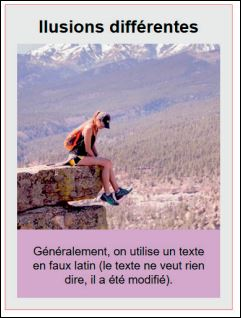

        <p>Le rendu sur un grand écran :</p>
        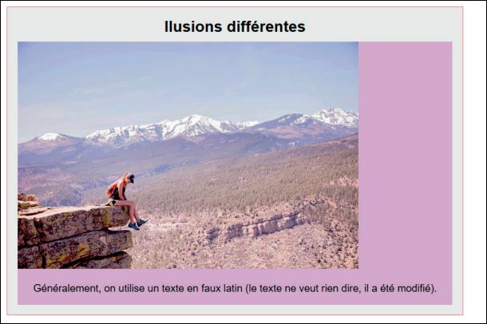

        <p>
          C’est la moitié du viewport (de la largeur d’écran), pas la moitié du
          parent (les pourcentages ne fonctionnent pas avec sizes).
        </p>
        <p>
          Non seulement la taille de l’image est différente en fonction de la largeur
          de l’écran, mais comme tout à l’heure, ce n’est pas la même image que
          choisit d’afficher le navigateur.
        </p>

      </article>

      <article>
        <h2 id="Grand-III">III. La balise &ltpicture&gt</h2>
        <h3 id="Fonctionnement" >A. Fonctionnement</h3>
        <p>
          Il existe une balise qui autorise une maîtrise plus précise et un pilotage
          plus fin de l’affichage des images en fonction de la largeur de l’écran. Il
          s’agit de la balise &ltpicture&gt.
        </p>

        <p>Le code HTML :</p>
        <p>
          &ltpicture&gt
          <br>&ltsource media="(max-width: 310px)" srcset="img/mount-ratio.jpg" &gt
          <br>&ltsource media="(min-width: 311px)" srcset="img/mount-grande.jpg" &gt
          <br>&lt src="img/mount.jpg" alt="personnage" &gt
          <br> &lt/picture&gt
        </p>

        <p>
          L’élément &ltpicture&gt a pour enfant &ltsource&gt (que l’on connaît pour la
          balise &ltvideo&gt) et doit obligatoirement avoir un enfant &ltimg&gt pour
          permettre aux navigateurs qui ne comprennent pas de quoi on parle,
          d’afficher quelque chose.
        </p>
        <p>
          L’attribut media de la balise &ltsource&gt permet de réaliser une media query
          plus efficace que celles que nous avons vues plus haut dans l’attribut
          srcset. En effet, ce n’est plus le navigateur qui choisit telle ou telle image
          selon des considérations qui restent assez opaques, c’est nous qui, pour
          une taille d’écran souhaitée, indiquons quelle image utiliser et ceci, très
          précisément.
        </p>

        <p>Le rendu en dessous de 310 px :</p>

        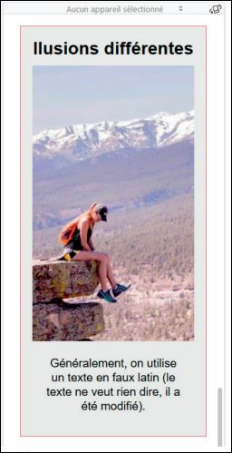

        <p>Le rendu au-dessus de 310 px :</p>

        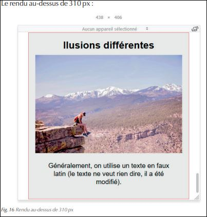

        <p>
          Il est également possible d’indiquer <strong>une densité</strong>. Tout comme pour le
          choix d’image, avec &ltpicture&gt, on a un degré de maîtrise plus important
          qu’avec l’attribut srcset placé dans une balise &ltimg&gt. On indique
          simplement la densité normale (x1) et une densité supérieure (ici x2)
          et c’est le navigateur qui choisit ensuite en fonction de la densité de l’écran.
        </p>

        <p>Le code HTML :</p>
        <p>
          &ltpicture&gt
          <br>&ltsource media="(max-width: 310px)" srcset="img/mount-ratio.jpg, img/mount-ratio.jpg 2x" &gt
          <br>&ltsource media="(min-width: 311px)" srcset="img/mount-grande.jpg, img/mount-grande.jpg 2x" &gt
          <br>&lt src="img/mount.jpg" alt="personnage" &gt
          <br> &lt/picture&gt
        </p>

        <p>
          Les fonds d’images CSS fonctionnent sur le même principe
          (ou fonctionneront lorsque tous les navigateurs auront implémenté
          cette fonctionnalité) avec image-set.
        </p>

        <p>Le code CSS :</p>
        <code>
          .fond { <br>
            backgroud: image-set(img/mount-ratio.jpg 1x, img/mount-ratio.jpg 2x)
            <br>}
          </code>

          <h3 id="Choix-des-types" >B. Choix des types (ou formats) d’images</h3>

          <p>
            Ce qui est également très intéressant avec la balise &ltpicture&gt, c’est que
            l’on peut choisir le format que l’on veut utiliser. En effet, certains formats
            d’images ne sont pas toujours compris par tous les appareils.
          </p>

          <p>En plus de la triade GIF, JPEG et PNG, on a :</p>

          <p>
            -SVG : format d’image vectorielle pour le web, basé sur le XML. Le
            plus simple étant de le traiter comme une image et de le réaliser grâce
            à un logiciel de dessin vectoriel, dont les plus connus sont Illustrator
            d’Adobe ou Inkscape (logiciel gratuit et open source). Attention toutefois, il peut présenter des failles de sécurité, raison pour laquelle, par
            exemple, il n’est pas utilisable par défaut sur le CMS Wordpress ;
          </p>

          <p>
            -WEBP : format plus léger et de meilleure qualité que le jpeg, aux
            performances de téléchargement optimisées, lancé par Google.
            Supporté uniquement par Chrome et Opera à l’heure actuelle, même
            si les autres navigateurs semblent sur le point de l’adopter ;
          </p>

          <p>
            -HEIF : identique à webp, mais lancé par APPLE. Encore peu de
            compatibilité ;
          </p>

          <p>
            -JPEG 2000 : peu supporté, sauf part Safari.
          </p>

          <p>
            Si l’on veut néanmoins utiliser ces formats sans mettre en péril l’affichage
            d’une image, cela est désormais possible avec l’attribut type.
          </p>

          <p>
            Ici, on le fait avec des media queries pour rendre la visualisation plus
            explicite :
          </p>

          <p>Le code HTML :</p>
          <p>
            &ltpicture&gt
            <br>&ltsource type="image/png" media="(max-width: 510px)" srcset="img/logo.png" &gt
            <br>&ltsource type="image/svg+xml" media="(min-width: 511px)" srcset="img/logo.svg" &gt
            <br>&lt src="img/logo.jpg" alt="logo" &gt
            <br> &lt/picture&gt
          </p>

          <p>
            Lorsque l’écran fait moins de 510 px, on demande d’afficher un fichier
            png. À partir de 511 px, c’est un svg qui s’affiche.
          </p>

          <p>Le rendu sur un petit écran :</p>
          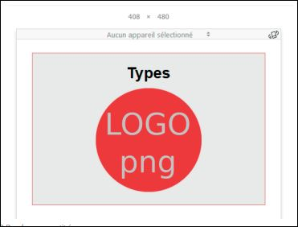

          <p>Le rendu sur un grand écran :</p>
          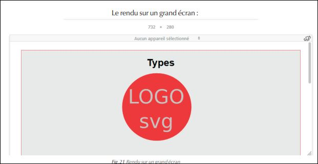

          <p>Il est donc possible de proposer des formats de fichiers d’images
            différents :</p>


            <p>
              Si l’appareil peut afficher le format webp, il affiche ce fichier, sinon il
              continue sa lecture du code HTML. S’il peut afficher le svg, il l’affiche,
              sinon il se rabat sur le fichier jpg placé dans la balise &ltimg&gt.
            </p>

            <p>
              Pour trouver la nomenclature à appliquer dans l’attribut type, se reporter sur la page suivante : https://www.iana.org/assignments/media-types/
              media-types.xhtml#image
            </p>

            <p>
              Quelques remarques quant à la balise &ltpicture&gt: <br>
              – elle doit toujours avoir comme enfant, une balise &ltimg&gt, celle-ci est
              à placer en dernier ;<br><br>
              – attention à l’ordre des balises &ltsource&gt, la première que peut afficher
              le navigateur sera choisie ;<br><br>
              – l’attribut srcset fonctionne pour &ltsource> et &ltimg&gt,
              mais src fonctionne uniquement avec &ltimg&gt
            </p>

            <p>
              ATENTION! quand on stylise les images, il vaut mieux piloter des largeurs
              d’affichage sur le parent de l’image responsive, soit très souvent sur &ltpicture&gt.
            </p>

            <p> Il est aussi déconseillé de styliser &ltpicture&gt.</p>

          </article>

          <article>
            <h2 id= "Grand-IV" >IV. Conclusion</h2>

            <p>Il n’y a plus d’excuse pour ne pas savoir utiliser d’images responsives !</p>

            <p>
              L’intérêt, outre la qualité de l’image obtenue par les utilisateurs, est de
              deux ordres :
            </p>
            <p>
              Premièrement, on peut avec plus de facilité, choisir des images ou des
              cadrages qui vont s’adapter aux appareils et à la taille de leur écran.
            </p>

            <p>
              Enfin, on gagne en efficacité avec des temps de chargement qui ne sont
              pas négligeables, en optimisant les images, qui sont, dans la grande majorité
              des cas, les éléments les plus lourds à charger.
            </p>

          </article>

        </main>
        <footer>
          <p>
            Pages réalisés par David Soutarson dans le cadre de son apprentissage des
            langages du Web.
          </p>
        </footer>

      </body>
      </html>
